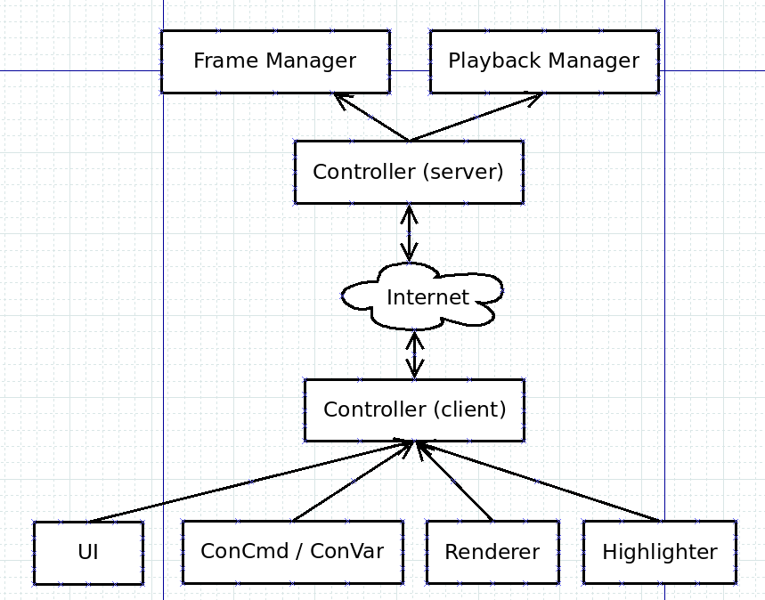

Technical Design¶
SMH code should follow these basic principles:
Code should be as client-authoritive as possible, all logic that can sensibly be done in client, should be
Communication between modules and client-server communication should happen through the Controller
SMH should not be dependent on any other addons, and support for other addons should be completely conditional
Architecture overview¶

The central piece of SMH code architecture is the Controller. It is responsible for communication between modules and client/server. It also stores the state and settings, so that it is accessible by all modules.
For example, say we issue the console command smh_next:
Concommand module invokes controller to move to next frame
Controller calculates what the next frame is (is it current+1 or back to first frame?)
Controller sends “set frame” command to server
Server controller receives command and invokes keyframe manager to configure entities
Server sends an ack message back to client
Client controller invokes an event corresponding to the ack
UI listens to the event and moves the playhead to the correct position
Module details¶
Server¶
Controller - Communicate with clients, receive requests from clients
KeyframeManager - Create, update and delete keyframes for players
PlaybackManager - Position entities for keyframe playback
KeyframeData - Data container for keyframes
Client¶
Controller - Communicate with server, send commands to server
Highlighter - Render currently selected entity halo
Renderer - Screenshot rendering
ConCommands - Register and handle console commands
UI - Derma UI setup and logic
Settings - Register and handle settings (console variables)
KeyframeData - Data container for keyframes
State - Data container for client state (frame position, playback settings)
Keyframe data¶
On serverside, a keyframe consists of
Keyframe ID, a shared unique identifier of the keyframe
Frame, aka position of the keyframe
Easing data
Modifier data, aka entity state data for the keyframe
Whenever updated keyframe data is sent to client, Modifier data is omitted. The client has to separately ask for modifier data to use for saving or ghost rendering.
KeyframeData stores keyframes in the following format:
{
[player] = {
Keyframes = {
[ID] = [keyframe]
},
Entities = {
[Entity] = {
[keyframe]
}
}
}
}
Keyframes can be used to lookup keyframe data with it’s ID, and Entities can be used to lookup keyframe data for a specific entity. Both reference the same data (the same Lua table).